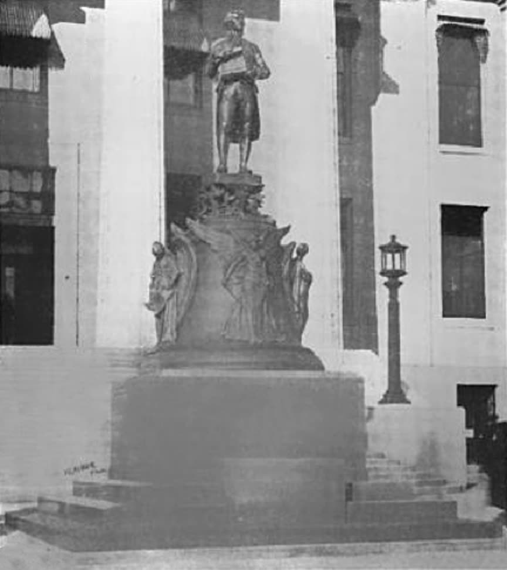

Louisville Metro Hall
Jefferson Monument at Metro Hall

Moses Jacob Ezekiel's bronze of Thomas Jefferson stands on the front lawn of Louisville Metro Hall, the old Jefferson County Courthouse. He holds the Declaration of Independence and stands on a Liberty Bell with no crack. The Bernheim brothers commissioned the work in 1899. The city's public-art record dates it 1901, and the Courier-Journal pictured the unveiling on 10 November 1901. The same record says the bronze is still on that lawn.
- Place
- Front lawn, in front of the historic entrance steps. 527 West Jefferson Street, with the entrance numbered 601 West Jefferson Street. Louisville, Kentucky 40202. Pin 38.25458, -85.75944.
- Figure
- A 9-foot bronze of Jefferson at age 33, in the 1902 account, on a Liberty Bell pedestal 9 feet high and nearly 10 feet across. The whole monument is 25 feet high. The city catalog calls the commission a life-size bronze.
- The four
- Liberty, in a Phrygian cap, under him. Justice, blindfolded, with a sword and scales, behind him. Religious Freedom on his left. Equality, also the Brotherhood of Man or Human Freedom, on his right.
- A second casting
- A smaller replica went to the University of Virginia in 1910. The Louisville lawn holds the earlier bronze.
Jefferson on the bell
Ezekiel had already given Louisville a bust of Abraham Lincoln. In 1899 the Bernheim brothers asked him for a second presidential likeness, this time a bronze Jefferson. The city's catalog, PALM 00020, describes the president on an uncracked Liberty Bell, holding the Declaration of Independence, with four winged figures around the base of the bell. Liberty stands directly beneath him and wears a Phrygian cap. Justice stands behind him, blindfolded, with a sword and scales. The scales are now lost. Religious Freedom is at Jefferson's left. Equality, also identified as the Brotherhood of Man or Human Freedom, is at his right.
The Monumental News for 1902, reprinted on the monument's Wikipedia page from R.J. Haight's public-domain magazine, measures the bronze at 9 feet and shows Jefferson at 33, presenting the Declaration to the Second Continental Congress. The bell pedestal is 9 feet high and nearly 10 feet across. Liberty, at the front, starts forward and bursts the chains from her arms. Justice has bandaged eyes, a drawn sword in one hand, and scales in the other. Equality, in that account, casts off the law of primogeniture and treads the 1765 Stamp Act underfoot. The lower part is dark Quincy granite from Massachusetts. Clarke and Loomis of Louisville were the constructing architects. The bronze was cast in Berlin. Ezekiel designed the granite pedestal and made the models in his Rome studio. The 1902 account calls him Sir Moses Ezekiel. The whole stack, figure, bell, and base, is 25 feet high.
The Bernheim brothers presented the monument to Louisville in November 1901. The unveiling ceremonies included addresses by former Kentucky governor William O'Connell Bradley and Mayor Charles P. Weaver. A Courier-Journal picture of that unveiling is dated 10 November 1901. The work went onto the front lawn of the Jefferson County Courthouse at 527 West Jefferson Street. That building is now Louisville Metro Hall. The city's exhibit table of contents places the bronze directly in front of the steps of the historic entrance at 601 West Jefferson Street. Both numbers are the same hall. Stand on the lawn in front of those steps and the tall figure on the bell is the monument.
What you see now
The lawn is outdoors, on West Jefferson Street, so the bronze is a sidewalk visit. The 1902 photograph shows the group with Justice's scales still in her hand and the courthouse wall behind. On the lawn today the city's record is the guide for what changed: the scales are gone, and the courthouse answers to the name Metro Hall. Walk once around the bell. The cap marks Liberty. The blindfold marks Justice. Left is Religious Freedom. Right is Equality.
In 1910 a smaller replica of the Louisville statue went to the University of Virginia, the school Jefferson founded in 1819, beside the Rotunda in Charlottesville. That casting is a different campus. The earlier bronze, the one the Bernheim brothers gave the city, is the one on this lawn.
The 2020 argument, and the lawn today
Louisville's argument over monuments in 2020 was centered on the John B. Castleman statue in Cherokee Triangle, which has Confederate ties and had been vandalized. The Landmarks Commission had voted to remove it. On 25 February 2020, WLKY reported that Friends of Louisville Public Art were fighting that removal. The group wrote to Mayor Greg Fischer and put up a billboard on Baxter Avenue about Castleman's record. They said taking the statue down would erase history, and they feared other monuments would follow, naming George Rogers Clark and Thomas Jefferson.
That fear named this bronze. It was not a vote, in that report, to take Ezekiel's Jefferson off the courthouse lawn. The city's public-art record, still published as an active outdoor statue, places the 1901 bronze on the front lawn of Metro Hall. A visitor in Louisville finds it there, in front of the historic steps, with the four winged figures and with Justice's scales missing.
Other Kentucky figures on this site are a different walk. George Rogers Clark on the Belvedere is the Louisville bronze the 2020 group named in the same breath. The Lincoln statue in Hodgenville is the seated bronze on the public square, not Ezekiel's Louisville bust. The 14-foot Sasquatch at Armco Park is the Ashland carving. The full list is the Kentucky directory.
Last verified . Open the pin.
Questions
Who made the monument, and when?
Moses Jacob Ezekiel made the bronze. The Bernheim brothers asked him for it in 1899. The city's record dates the work 1901. The Courier-Journal pictured the unveiling on 10 November 1901.
What do the figures under Jefferson represent?
Liberty, with a Phrygian cap, directly beneath him. Justice, blindfolded, with a sword and scales, behind him. The scales were later lost. Religious Freedom stands at his left. Equality, also called the Brotherhood of Man or Human Freedom, stands at his right.
Where does it stand?
On the front lawn of Louisville Metro Hall, the former Jefferson County Courthouse, in front of the historic entrance steps. The building is 527 West Jefferson Street, and the historic entrance is numbered 601 West Jefferson Street. Louisville, Kentucky 40202.
Sources
- Louisville public-art record, PALM 00020. Ezekiel, 1901, the bell, the four figures, the lost scales, 527 West Jefferson Street, and the 1910 replica.
- Earlier copy of the same record. The Courier-Journal unveiling picture dated 10 November 1901.
- Exhibit table of contents. 601 West Jefferson Street and the bronze at the historic entrance.
- Jefferson Monument (Louisville, Kentucky). The 1902 Monumental News account of the height, the bell, the granite, Clarke and Loomis, the Berlin cast, and the unveiling speakers.
- 1902 photograph. R.J. Haight, The Monumental News, public domain.
- WLKY, 25 February 2020. Friends of Louisville Public Art, the Castleman vote, and the fear that Clark and Jefferson could follow.
.png){kind=link}
Link to https://testedprofit.com/KY/Jefferson%20Monument%20(Louisville,%20Kentucky)/.